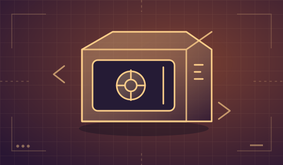
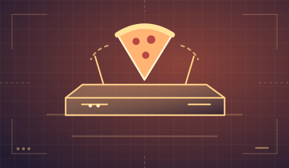
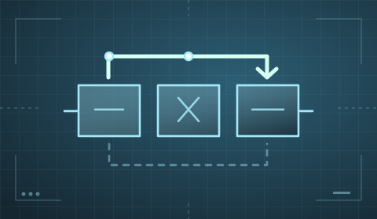
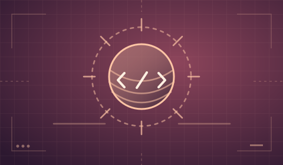
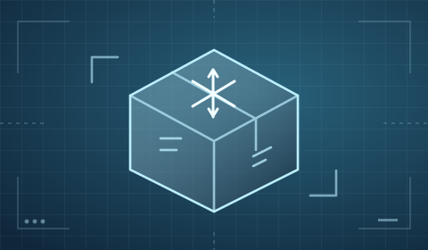

A sandbox assessment of exposed services, weak encryption, and unsafe session handling.

A Linux lab covering hidden clues, reused SSH keys, and unsafe sudo permissions.
A weak prime makes an RSA key easier to break.

A drone routing challenge about memory corruption and callback pointers.
A lab showing the risks of a writable share used by a scheduled task.
A buffer overread exposes data that should stay private.
A login challenge showing why reused passwords are risky.
A reverse engineering challenge built around a hidden text transformation.

A debugging exercise that reveals the limits of an input filter.

A web API lab covering path traversal, file uploads, and task permissions.
A Linux lab about exposed credentials and an outdated service.
A CMS lab covering exposed backups, upload permissions, and an old kernel flaw.

A WordPress lab about weak credentials and unsafe system permissions.
An interactive fiction challenge solved with a small script.